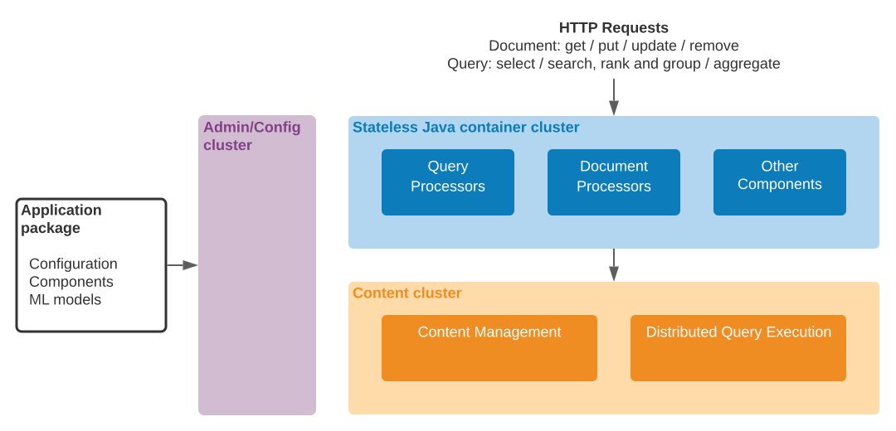

Vespaはスケーラブルで低レイテンシな、ステートフルあるいはステートレスなバックエンドサービスを簡単に開発して稼働させることができるプラットフォームです。 このドキュメントではプラットフォームの機能と主なコンポーネントの概要を説明します。
Vespaを使うことで、レイテンシや信頼性を犠牲にせずに、大規模データや高負荷に耐えるバックエンドあるいはミドルウェアシステムを構築することができます。 VespaのインスタンスはいくつかのステートレスなJavaコンテナー・クラスターと、データを保持する0個以上のコンテント・クラスターで構成されます。
ステートレスなコンテナー・クラスターは、入力データと、リクエスト/クエリーとそのレスポンスの両方を処理するコンポーネントをホスティングします。 これらのコンポーネントは（インデックス構築やクエリー実行の全ステージといった）プラットフォームに関する機能を提供するだけでなく、アプリケーションのミドルウェアのロジックも提供します。 アプリケーション開発者は、全ての機能を満たす単一のステートレスなクラスターとしてVespaシステムを設定することもできますし、タスクの種類に合わせて異なる複数のクラスターを設定することもできます。 そしてコンテナー・クラスターは クエリーやデータ操作の命令を適切なコンテント・クラスターにパスします — アプリケーションが保持しないデータである場合には、そのデータを供給する外部サービスと連携することが可能です。
Vespaクラスターの コンテント・クラスターは データ（ドキュメント）を保持して、それらに対する参照、分散された選択/グルーピング/集約のクエリー処理に責任を持ちます。 コンテント・クラスターはシンプルなkey-valueの配信システムとして機能させることもできますし、構造化・非構造化データに対する複雑な検索を実行したり、関連度のモデルに従って並べ替えて検索結果をグルーピングしたり集約処理を実行したりもできます。 これらの操作が低レイテンシで機能するよう細心の注意が払われています。それは、結果データを事前に計算することなく、大規模なデータセットに対してエンドユーザー・アプリケーションが直接使えるようにするためです。
スケーラビリティを提供するために、コンテント・クラスターは設定された冗長性のレベルを維持するためにバックグラウンドで自動的にデータを再バランスします。到達できないノードに対するフェイル・オーバーも行なうため、柔軟であり、自動リカバリー機能を備えているといえるのです。
コンテナー・クラスターでの中間処理の後、データはコンテント・クラスターに書き込まれます。 書き込みは数ミリ秒の後に有効になり、与えられた時間内に成功するか失敗に関する情報を提供するかが保証されており、利用可能なリソースに合わせてスケールされます。 書き込みはHTTPで直接送信することもできますし、Javaクライアントを使うこともできます — APIドキュメンテーションを参照してください。
Vespaに蓄積されるドキュメントのインスタンスは設定されたスキーマを持たなければなりません。 システムにおける各コンテント・クラスターは同時に複数の型のドキュメントを扱うことができます; アプリケーションは異なる型のデータを異なるコンテント・クラスターに割り当てることもできますし、同じコンテント・クラスターに複数のデータ型を割り当てることもできます。
コンテナー・クラスターとコンテント・クラスターはVespaのすべてのエンドユーザーのトラフィックを処理しますが、3番目のタイプのクラスタがあります。それはadminとconfigクラスターで、これは他のクラスターを管理してシステムの設定変更のリクエストを扱います。
Vespaアプリケーションはアプリケーション・パッケージで完全に記述されますが、それはシステムの一部として稼働するクラスターに関する宣言、コンテントのスキーマ、アプリケーションで必要なJavaコンポーネントやその他の設定、データ・ファイルなどを含むディレクトリです。 アプリケーションの所有者はアプリケーション・パッケージを単一のadminクラスターにデプロイすることで稼働させることができ、また同じ手順で稼働中のアプリケーションに変更を加えることができます。 アプリケーション設定の管理に加えて、adminクラスターはシステムのすべてのノードからリアルタイムでログを収集します。 ノードにVespaがインストールされて起動されると、それはシステム全体が単一のユニットとして扱えるようにadminシステムによって管理されるようになり、そしてアプリケーションの所有者はシステムのノードのローカルで管理タスクを実行する必要はありません。
ドキュメントの残りでVespaが行なう機能の詳細について説明します。
Vespaは以下のオペレーションを受け付けます:
これらのオペレーションで開発者はリッチな機能のアプリケーションを構築することができます。 それは選択やキーワード検索、オーガナイズやコンテントの処理が宣言的なクエリーで表現可能な蓄積されたコンテントで稼働するようなJavaのミドルウェア・ロジックとして記述されます。
コンテナー・クラスターは上記に掲載されたオペレーションと、それらの返却データの処理に従事するアプリケーション・コンポーネントをホスティングしています。 Vespaはコンポーネントのインフラとともに、すぐに使えるコンポーネント群を提供しています: adminサーバまたはアプリケーション・パッケージからの設定の注入のサポートが追加されたGuiceの上に構築された依存関係の注入; OSGiをベースとしたコンポーント・モデル; メトリクスやロギングと同様にモジュール性のためハンドラのチェーンにコンポーネントを連結できる共有されたメカニズム。 さらにコンテナーはリモート・リクエストを処理したり発行できるネットワーク・レイヤーを提供しています - HTTPはすぐに使えますし、その他のプロトコル/トランスポートはコンポーネントとして透過的にプラグインできます。
開発者はアプリケーション・パッケージを単に再デプロイするだけでコンポーネント群に変更を（もちろんその設定も）加えることができます - システムはその場でリクエスト処理に影響を与えずに、クラスターのノードに対するコピー、コンポーネントのロード/アンロードを管理します。
コンテント・クラスター はデータを確実に保存して、検索と選択のためにデータの分散インデックスを維持します。クラスターがノードやディスクの喪失に対して自動で修復できるよう、データはアプリケーションで指定されたコピー数に応じて複数ノード間でレプリケーションされます。同じメカニズムを使って、クラスターは拡大したり縮小したりすることもできます。それはアプリケーション・パッケージで宣言された利用可能なノードの集合を単に変更するだけです。
個々のドキュメントの参照はそのドキュメントを保持するノードに直接的にルーティングされ、クエリーは対象ドキュメントを保持する一部のノードに分散されます。 複雑なクエリーはコンテナーとコンテント・ノードの間で複数ステップにまたがる分散アルゴリズムで処理されます; これはVespaのデザインのゴールのひとつである低レイテンシーを実現するためのものです。
単一のadmin・configクラスターがシステムの他のクラスターを制御します。 アプリケーション開発者が詳細を気にせずに希望するシステムの高レベルな宣言ができるよう、 プロセスとコンポーネントの実体を含む個々のクラスターの低レベルな設定が導かれます。 アプリケーション・パッケージが再デプロイされるといつも、システムは設定の必要な変更を計算して、これらが分散されたコンポーネントにプッシュされます。 効率のため、変更されたコンポーネントとデータ・ファイルはBitTorrentで配布されます。
アプリケーション・パッケージはHTTP REST APIかコマンドライン・インタフェースで変更したり、再デプロイしたり、検証することができます。 設定の変更を唯一で一貫性のあるものにするため、また単一障害点を持つことを避けるため、管理クラスターはZooKeeperの上で稼働します。
数百ノードで構成される大規模システムも、すべてのサービスを稼働させている単一ノードも、アプリケーションパッケージは同じように見え、またデプロイも同じ方法で行われます。 唯一の必要な変更はクラスターを構成するノードのリストです。 コンテナー・クラスターはメソッド呼び出しでアプリケーション・パッケージを「デプロイ」することで、単一のJava VMの中で起動することもできます。 これはIDEやユニット・テストの中でアプリケーションをテストするのに便利です。 コンポーネントを含むアプリケーション・パッケージは、サンプル・アプリケーションを始めとして、Mavenを使ったIDEで開発することができます。
Vespaを使うことで、低レベルの複雑さに開発者が悩むことなく、スケーラブルで高い基準に従う、リッチに機能して高い可用性のあるアプリケーションを構築することができます。 開発者は時間の経過とともに、システムをオフラインにすることなくアプリケーションを進化させ、また成長させることができます。 そして、データを陳腐化させてパーソナライズできなくするような、複雑なデータやページの事前計算を避けることができます。なぜならそれは、同時かつ定期的に変化するユーザーのデータに対する複雑なクエリーをしばしば必要とするからです。